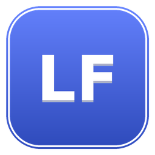
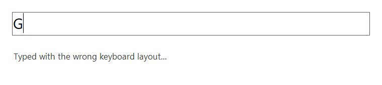

LayFlipБесплатно для личного использования, для Windows. Работает с русской, украинской, белорусской и английской раскладками, а также с болгарской, сербской, македонской, татарской, казахской, киргизской, монгольской, греческой, немецкой, французской, испанской, итальянской, португальской, польской, чешской, словацкой, нидерландской, шведской, датской, норвежской, финской, венгерской, румынской, литовской, латышской, эстонской, исландской, хорватской, турецкой, ивритом, арабской, персидской, армянской и грузинской.
ё и прокрутите вверх.
Вниз — вернуть.
Короткое нажатие печатает символ как обычно — жест реагирует только на удержание со скроллом.

Проверьте сами: заблокируйте программу в брандмауэре Windows или посмотрите её соединения в «Мониторе ресурсов» — их нет, и работать она от этого не перестанет. Что она читает и что хранит, описано в политике приватности.
Единственное сетевое обращение во всей программе — ручная проверка обновлений по клику в меню, и больше ничего: ни фоновых проверок, ни телеметрии, ни истории набранного текста "на всякий случай".
Сертификат подписи ещё не подключён, поэтому Windows SmartScreen может показать предупреждение о неизвестном издателе — нажмите «Подробнее» → «Выполнить в любом случае». Если включён Smart App Control и установщик заблокирован: правый клик по файлу → «Свойства» → отметьте «Разблокировать» → OK. Это ожидаемо для нового приложения без подписи, а не признак чего-то вредоносного; контрольная сумма установщика публикуется рядом с ним на странице релиза.
Программа ставит низкоуровневый перехватчик клавиатуры и колеса мыши (WH_KEYBOARD_LL/WH_MOUSE_LL) —
тот же системный механизм, которым пользуются раскладка-переключатели и менеджеры буфера обмена.
Перехватчик смотрит только на то, какая физическая клавиша нажата и когда крутится колесо, чтобы
распознать жест "удержал ё + прокрутил" — он не читает и не сохраняет остальной ввод. Сам текст программа
получает только в момент жеста, через выделение и копирование, обрабатывает его в памяти и сразу
вставляет обратно; буфер обмена после этого восстанавливается в то состояние, в котором был до жеста.
| LayFlip | Punto Switcher | Caramba Switcher | |
|---|---|---|---|
| Языки | 38, по установленным раскладкам | EN / RU / UK и ещё ~10 | EN / RU (UK — не всегда) |
| Фоновая телеметрия / проверка обновлений | Только вручную по клику | Есть автообновление | Есть автообновление |
| История набранного текста ("дневник") | Нет | Есть (опционально) | Нет |
| Выбор между вариантами для неоднозначных слов | Да, прокруткой | Нет | Нет |
| Исправление случайного Caps Lock | Да | Нет | Да |
| Метод распознавания | Статистическая модель букв + контекст фразы | Словарь | Словарь + свои правила |
Выделите, зажмите ё и прокрутите вверх. Вниз — вернуть. Короткое нажатие печатает символ как обычно — ничего не ломается в обычном наборе текста.
Нет, установка идёт только для текущего пользователя. Исключение — если целевое окно (куда вставляется текст) само запущено от имени администратора: тогда вставка в него тоже потребует запустить LayFlip с правами администратора.
Низкоуровневый хук видит физические нажатия клавиш и колесо мыши, чтобы распознать жест, но не сохраняет и никуда не отправляет сам текст. Содержимое попадает в программу только в момент жеста, через копирование выделенного фрагмента, и сразу же обрабатывается локально.
Главное отличие — работа без сети и без записи набранного и честная поддержка 38 языков (от русского и украинского до греческого, арабского и армянского), включая выбор между вариантами для действительно неоднозначных слов. Подробности — в таблице сравнения выше.
Русское "ы" и украинское "і" физически сидят на одной клавише, и для некоторых слов модель не может уверенно выбрать одно прочтение. В этом случае второй скролл подряд в том же удержании показывает альтернативу вместо того, чтобы молча угадывать.